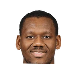

Green plans on hosting the camp again next offseason.
“Mo Williams was a solid dude who always looked out for the young guys,”
4 quotes about Maurice Williams from 4 players, coaches and executives, newest first. Each one links to its original source.
Green plans on hosting the camp again next offseason.
“Mo Williams was a solid dude who always looked out for the young guys,”
Mark Berman:Troy Daniels on Mo Williams admitting he invented controversy to create a distraction for Troy:
“That's respect from a vet. It makes me kind of relevant. It makes me feel good. I'm just appreciative to be talked about on NBA Gametime.”
#Blazers GDamian Lillard on adding Mo Williams via text:
“It's a great pickup for us. It's making us a better team.”

Lavoy Allen1 quoteGreen plans on hosting the camp again next offseason.
“Mo Williams was a solid dude who always looked out for the young guys,”
Candace Buckner:Lavoy Allen on Mo Williams' 52 point game:
“It said 19-for-33 on the stat sheet but…it seemed like he ain’t miss 14 shots.”
Mark Berman:Troy Daniels on Mo Williams admitting he invented controversy to create a distraction for Troy:
“That's respect from a vet. It makes me kind of relevant. It makes me feel good. I'm just appreciative to be talked about on NBA Gametime.”
#Blazers GDamian Lillard on adding Mo Williams via text:
“It's a great pickup for us. It's making us a better team.”